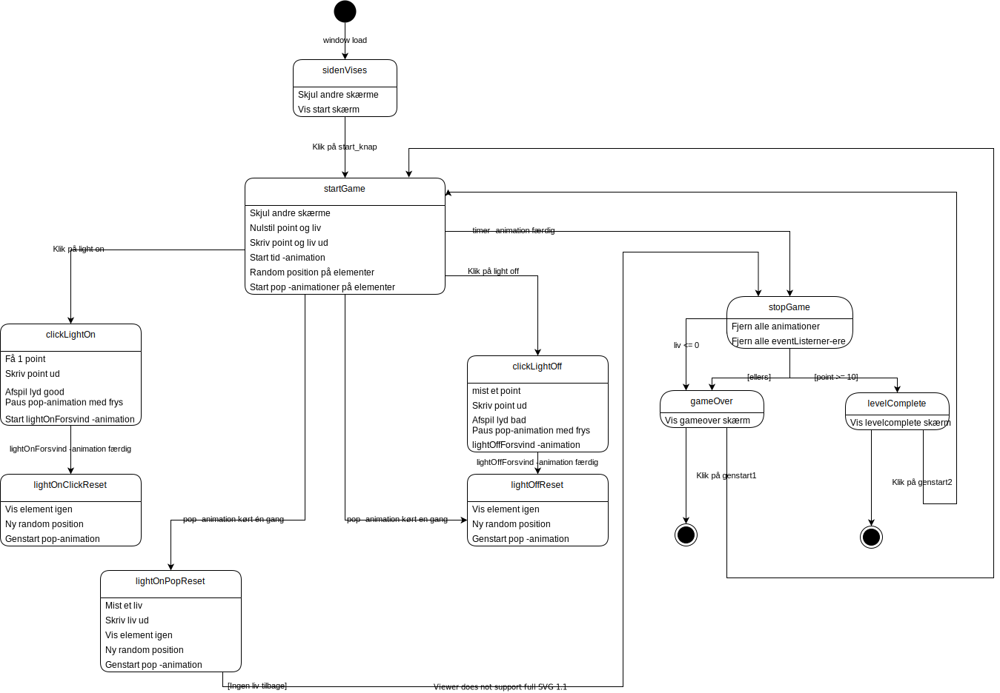
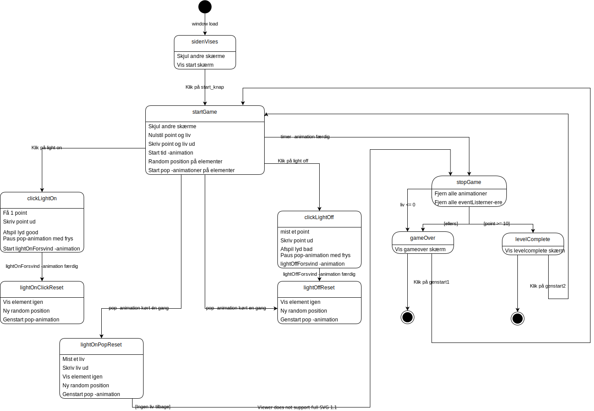

Tema 04
04.04.01 Temaopgave
I animationsopgaven har jeg bland andet lært om elementerne fra spildesign og hvordan man kommer til dem gennem ideudvikling og senere vha. JavaScript og css-animationer. Jeg brugte førnævnte værktøjer til at udvikle spillet. Gennem skitsering og andre værktøjer kom jeg frem til det rigtige design og udvalgte den bedste kode til at nå mit mål.
Processen:
Gennem mindmapping kom jeg frem til mit koncept jeg kunne gå videre med. Jeg valgte stiludgangspunktet Two Dotes, som jeg analyserede og kunne derefter gå i gang med skitseringen ud fra koncept og stiludgangspunkt. Efter at have lavet en papirprototype, fik jeg feedback fra medstuderende, som jeg kunne bruge til at designede og udvikle de individuelle spilelementer i Illustrator. Bagefter satte jeg spillet op med html og css. Til sidst gik jeg i gang med at kode animationerne i css og til sidst fik jeg det hele til at køre med javascript ud fra aktivitetsdiagram og state-machine diagram.
 
